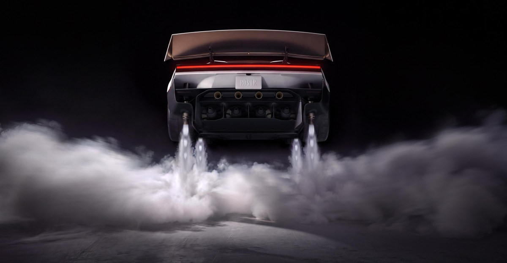

for DC Advanced UX Team.Vivi · Yohan · Libby · Lim Jisu · Katey · Anna
Back Issue

Cockpit
Roadster: it flies, then drives the ceiling
Tesla's next Roadster, shown in Waco on 15 October, drove up a ramp stuck to the ceiling, flipped, and flew over a Model 3, Model Y, Cybertruck, Semi and Cybercab. A SpaceX fan underneath pulls up to 2 g; ten cold-gas nozzles and 600 litres of air do the flip. Lars Moravy called the move a kick-flip. Two seats are molded into the tub, and the yoke, brake and throttle are steer-by-wire. The Rocket trim that flies is invite-only and not legal on public roads. The demo car was driven remotely.
10월 15일 웨이코에서 테슬라의 다음 로드스터는 램프 천장에 붙어 올라간 뒤 뒤집혀, 모델 3·모델 Y·사이버트럭·세미·사이버캡 위를 날았다. 바닥의 스페이스X 팬이 최대 2g로 붙들고, 냉가스 노즐 열 개와 공기 600리터가 플립을 만든다. 라스 모라비는 이 동작을 킥플립이라 불렀다. 좌석 둘은 차체에 묻히고, 요크·브레이크·스로틀은 스티어 바이 와이어다. 나는 로켓 트림은 초대 전용이고 공도 불가다. 데모 차는 원격으로 몰았다.
Porsche's Mission S, shown 15 October, is a mid-engine concept above the 911, and it has no centre screen. Five round analog gauges sit behind the wheel, rev counter in the middle, with digital displays layered behind them. The gauges move with the drive mode. Push-pull controls handle comfort and driving functions. Navigation is a retractable Apple MagSafe phone holder. There is no passenger display. Style Porsche says the direction is for later production cars, and those cars will not be electric.
포르쉐가 10월 15일 공개한 미션 S는 911 위의 미드십 콘셉트이고 센터 스크린이 없다. 휠 뒤에 원형 아날로그 게이지 다섯 개가 있고 중앙은 타코미터이며, 디지털 표시는 그 뒤에 겹친다. 게이지는 드라이브 모드에 따라 움직인다. 편의와 주행은 밀고 당기는 조작이다. 내비게이션은 수납형 애플 맥세이프 폰 홀더다. 동승석 화면은 없다. 스타일 포르쉐는 이 방향을 이후 양산차에 쓰겠다고 했고, 그 차들은 전기차가 아니다.
Studio River in Paris posted R.EVISITED, a spec study of luxury-watch ads rather than a client film. A Hublot lies under Arctic ice while a translucent jellyfish circles it. The picture stays black and white until the ice breaks and the watch rises. Paul Maurin and Maxime Isoard handled the Houdini simulation, the modelling and the light. Keyvan Nourian edited, composited, designed the titles and made the sound. The studio treats the still frames as time continuing while nothing seems to move.
파리의 스튜디오 리베르가 스펙 필름 R.EVISITED를 올렸다. 고객 납품이 아니라 럭셔리 워치 광고의 화면 언어를 연구한 작업이다. 위블로가 북극 얼음 아래에 있고, 반투명한 해파리가 그 주위를 돈다. 화면은 흑백으로 유지되다가 얼음이 갈라지고 시계가 수면으로 올라온다. 후디니 시뮬레이션과 모델링, 라이팅은 폴 모랭과 막심 이소아르다. 케반 누리안이 편집, 합성, 타이틀, 사운드를 맡았다. 스튜디오는 멈춰 보이는 프레임에서도 시간은 계속된다고 적었다.
FRAME co-founder Anders Schroder, in a note posted 18 October, described Our Planet, a carpet film for Ege and Gensler. Patterns come from topography, bird routes and irrigation fields, and they were not to be drawn literally. FRAME directed every shot. Image and motion came from Nano Banana, Flux, Midjourney, Kling and Seedance, and most shots pass through several models. He says the studio holds about 95 percent of the result, and a tweak will not repeat the same movement.
FRAME 공동 설립자 안데르스 슈뢰더가 10월 18일 글에서 에게와 겐슬러의 카펫 필름 아워 플래닛을 설명했다. 문양은 지형, 철새 경로, 관개 밭에서 왔고, 그대로 그리라는 요구는 아니었다. 모든 샷은 FRAME이 디렉션했다. 이미지와 움직임은 나노 바나나, 플럭스, 미드저니, 클링, 시던스에서 나왔고, 대부분 샷은 여러 모델을 지난다. 그는 결과의 약 95퍼센트를 스튜디오가 쥐고, 한 군데를 고쳐도 같은 움직임이 반복되지 않는다고 했다.
Signal Festival's fourteenth edition, Dream On!, ran 15–18 October in Prague. Co-founder Martin Pošta told designboom the mapped works are meant to vanish: four nights, then the facade is only a facade. Commissions include an X Kinetic Techno Sculpture by Gábor Kitzinger, András László Nagy and Rozi Mákó, and Playmodes' Signes in the new Signal Space under Old Town Market Hall. Laterna Magika performed in black at the old wastewater plant, so only the lit body and the projection read.
Signal Festival第十四届Dream On!于10月15日至18日在布拉格举行。联合创始人Martin Pošta说，投影只存在四个晚上，之后立面恢复原样。委托包括三人合作的X Kinetic Techno Sculpture，以及Playmodes在老城市场大厅下Signal Space里的Signes。Laterna Magika穿黑色演出，只让被照亮的身体和投影可读。
시그널 페스티벌 14회 드림 온!이 10월 15일부터 18일까지 프라하에서 열렸다. 공동 설립자 마르틴 포슈타는 디자인붐에, 매핑 작업은 사라지도록 만든다고 했다. 나흘이 지나면 파사드는 다시 파사드다. 올해에는 가보르 키칭거, 언드라시 라슬로 너지, 로지 마코의 X 키네틱 테크노 스컬프처와, 구시가지 시장 홀 아래 시그널 스페이스의 플레이모드 시뉴가 있다. 라테르나 마기카는 옛 하수 처리장에서 검은 의상으로, 빛나는 몸과 프로젝션만 읽히게 했다.
Lachlan Fysh's FTC-1 is a 6×7 that corrects converging verticals without a view camera. A knob turns a TR8 lead screw, and the lens rises up to 30 mm while the body stays level. Side shift is 15 mm. The back turns between portrait and landscape on magnetic detents. Aluminium plates stiffen the core. Tilt is baked into a printed lens cone, not left as an axis that can drift. It weighs 1.1 kg, costs 1,200 Australian dollars, and won Gold for cameras at the 2025 International Design Awards.
라클런 피시의 FTC-1은 뷰 카메라 없이 수직선 수렴을 고치는 6×7이다. 노브가 데스크톱 3D 프린터의 TR8 리드 스크루를 돌리고, 바디는 수평인 채 렌즈가 최대 30mm 올라간다. 측면 시프트는 15mm다. 백은 자석 디텐트로 세로와 가로를 오간다. 알루미늄 판이 코어를 굳힌다. 틸트는 흔들리는 축 대신 출력한 렌즈 콘에 넣는다. 무게 1.1kg, 1,200호주 달러이며, 2025 인터내셔널 디자인 어워드 카메라 부문 골드를 받았다.
Mercedes-AMG's GT SUV, revealed 17 October, sits the driver low and angles a 14-inch multimedia display toward that seat, beside a 10.2-inch driver display meant to read as one unit. A 14-inch passenger screen is optional. On the GT 63, and as an option on the GT 55, three console rotaries set response, cornering and traction. Cluster styles include Classic, Pure and Trip. MBUX on MB.OS keeps a Virtual Assistant on the Zero Layer, and Track Pace can put corner angles in the head-up display.
메르세데스-AMG가 10월 17일 GT SUV를 공개했다. 운전자는 낮게 앉고, 14인치 화면은 그 시트를 향한다. 10.2인치 운전자 디스플레이는 한 덩어리로 읽힌다. 14인치 동승석 화면은 선택이다. 콘솔 로터리 세 개가 반응, 코너링, 트랙션을 정한다. 클러스터에는 클래식, 퓨어, 트립이 있다. MBUX는 제로 레이어에 가상 어시스턴트를 두고, 트랙 페이스는 코너 각을 헤드업에 넣는다.
BYD showed the Giant Screen UI on the third-generation Tang EV, ahead of a Q4 launch in China. A 35.4-inch cowl display under the windshield replaces the cluster and the head-up display, holding speed, status and navigation in one fixed band. A 30-inch touchscreen spans the centre and the passenger side. Map, media and vehicle windows can be resized and tiled. An animated companion, Xiao Mianbao, changes expression as it greets people. The upper display does not rotate.
BYD가 3세대 탕 EV에 자이언트 스크린 UI를 공개했다. 중국 출시는 4분기다. 윈드실드 아래 35.4인치 카울 디스플레이가 클러스터와 헤드업을 대신하고, 속도·상태·내비게이션을 고정된 가로 밴드에 둔다. 아래 30인치 터치스크린은 중앙과 동승석을 가로지른다. 지도, 미디어, 차량 창은 크기를 바꾸고 타일로 붙일 수 있다. 애니메이션 동반자 샤오몐바오는 인사하며 표정을 바꾼다. 예전 BYD 회전 화면과 달리 위쪽 디스플레이는 돌지 않는다.
Kevin Noki in Cologne printed ADHD ONE, a brick handset for answering a call without opening the iPhone. It has no cellular radio. A Qualcomm QCC3024 module uses the hands-free profile, and a Raspberry Pi Pico runs the keys. Nineteen buttons sit under a small OLED. Grilles come as Classic, Holes or Stripes, and the antenna as Retro, Slim, Screw, or none. STL files, Gerbers and firmware are on his site for personal use. The iPhone still has to stay in Bluetooth range.
쾰른의 케빈 노키가 아이폰을 열지 않고 전화를 받게 벽돌 핸드셋 ADHD ONE을 출력했다. 셀룰러는 없다. 퀄컴 QCC3024가 핸즈프리 프로파일을 쓰고, 라즈베리 파이 피코가 키를 돌린다. 작은 OLED 아래 물리 버튼이 19개다. 그릴은 클래식, 홀, 스트라이프이고, 안테나는 레트로, 슬림, 스크루이거나 없다. STL, 거버, 펌웨어는 개인용으로 그의 사이트에 있다. 아이폰은 블루투스 범위 안에 있어야 한다.
Boostep's new Ato, posted 17 October, is a tabletop assistant for older adults shaped like a radio. The cream housing is about 5.5 inches tall, with a woven face, one orange button and a dimpled volume knob. Press and talk. There is no display. Family set reminders in a phone app; the person at home hears them. Ato says it stores selected facts but not recordings. It cannot call emergency services. USB-C, no battery, Wi-Fi required. Hardware is 179 dollars, with deliveries in February 2027.
부스텝의 새 Ato가 10월 17일 글에 나왔다. 라디오처럼 생긴 탁상 어시스턴트다. 높이 약 5.5인치, 짜임 면, 주황 버튼 하나, 딤플 있는 볼륨 노브. 누르고 말하면 된다. 화면은 없다. 가족은 앱으로 알림을 보내고, 집에 있는 사람은 듣는다. 사실은 저장하고 녹음은 남기지 않는다. 응급 전화는 할 수 없다. USB-C, 배터리 없음. 179달러, 인도는 2027년 2월이다.
Spiny's second friction-drive kit, covered 16 October, packs motor and battery into 2.2 kg that clicks on after the mounts are fitted. Sensors drop the roller onto the rear tyre about 0.25 seconds after pedalling starts, and lift it when pedalling stops. The US version is 250 W nominal, 750 W peak, assisting to 20 mph. Other markets stop at 250 W and 25 km/h. The 266 Wh pack charges by USB-C and is rated IP65. Rear-suspension bikes are excluded. Kickstarter deliveries are estimated for April 2027.
10월 16일 보도된 스파이니 2세대 마찰 구동은 모터와 배터리를 2.2kg에 넣고, 마운트 뒤에 자전거에 클릭한다. 페달링 약 0.25초 뒤 롤러가 뒷타이어에 붙고, 멈추면 들려 끌리지 않는다. 미국형은 정격 250W, 피크 750W, 시속 20마일까지다. 다른 시장은 250W와 시속 25km다. 266Wh 팩은 USB-C 충전, IP65다. 리어 서스펜션 자전거는 빠진다. 킥스타터 인도는 2027년 4월 예정이다.
Saint of Athens and Manos Kypritidis split the Peace + Chaos flagship in Thessaloniki into two kinds of room. Peace uses neutral colour, natural materials, straight lines and diffused light. Chaos takes a show's backstage: high contrast, layered texture, broken geometry, harder light. Giagkos Papadopoulos photographed a plan where the two languages share one shop, rather than sitting as a backdrop behind the clothes.
Saint of Athens与Manos Kypritidis把塞萨洛尼基的Peace + Chaos旗舰店分成两种房间。Peace用中性色、天然材料、直线和漫射光。Chaos取后台：高对比、叠层肌理、碎裂几何和更硬的光。Giagkos Papadopoulos拍下的平面里，两种语言共用一间店，而不是衣服后面的布景。
세인트 오브 아테네와 마노스 키프리티디스는 테살로니키의 피스 + 카오스 플래그십을 두 종류의 방으로 나눴다. 피스는 뉴트럴 색, 천연 재료, 직선, 확산광이다. 카오스는 쇼의 백스테이지로, 고대비, 겹친 질감, 부서진 기하, 더 센 빛이다. 지아그코스 파파도풀로스가 찍은 평면에서 두 언어는 옷 뒤 배경이 아니라 한 가게를 나눈다.
Dennis Vanderbroeck, interviewed 18 October, treats a set as something that has to be used twice. For Miu Miu Spring/Summer 2027 at the Palais d'Iéna, floor tracks carried modular bleachers and a narrow catwalk, the audience as close as a 1990s show. The room is due to be reset for Alice Diop's exhibition, 21–25 October. Diesel's show used a rigid scaffold, with performers cutting through the crowd.
Dennis Vanderbroeck在10月18日的访谈里，把布景当成必须用两次的东西。Miu Miu 2027春夏在巴黎Iéna宫，地板轨道托着模块化看台和窄天桥，观众坐得很近，像1990年代的秀。同一空间将在10月21日至25日为Alice Diop的展览重排。Diesel那场用了刚性脚手架，表演者从人群中切过去。
데니스 판데르브루크는 10월 18일 인터뷰에서 세트를 두 번 써야 하는 것으로 다룬다. 팔레 디에나의 미우미우 2027 봄여름은 바닥 트랙이 모듈 관람석과 좁은 캣워크를 받쳐, 1990년대 쇼처럼 관객이 가까이 앉았다. 같은 방은 10월 21일부터 25일 알리스 디오프의 전시를 위해 다시 깔린다. 디젤 쇼는 단단한 비계였고, 퍼포머가 군중을 갈랐다.
Ruben Moutinho's The Form That Remained, published 16 October, builds objects from discarded research prototypes and keeps their names: SHESOIL, AUTONOVA, LIVIA, BRIVA, ACTIVA, UNIKA. The process he calls STRATA cuts, stacks and fuses parts from a single project so the joints stay visible. Lab colours and surface treatments remain. The pieces are one-offs, and the archive is whatever a finished experiment left on the bench.
Ruben Moutinho的The Form That Remained于10月16日发表，用丢弃的研究原型做物体，并留下名字：SHESOIL、AUTONOVA、LIVIA、BRIVA、ACTIVA、UNIKA。他称为STRATA的做法把同一项目的零件切开、叠放并熔在一起，接缝仍然看得见。实验室的颜色和表面处理留着。作品是孤品，材料就是做完的实验留在台子上的东西。
루벤 모우티뉴의 더 폼 댓 리메인드는 10월 16일 공개됐다. 버려진 연구 프로토타입으로 물건을 만들며 이름을 남긴다. SHESOIL, AUTONOVA, LIVIA, BRIVA, ACTIVA, UNIKA. STRATA라 부른 공정은 한 프로젝트의 부품을 자르고 쌓고 녹여 이음이 보이게 둔다. 실험실의 색과 표면은 남고, 작품은 단 하나다. 재료는 끝난 실험이 작업대에 남긴 것이다.
On 16 October designboom ran a chapter of Giovanna Silva's NIGHTSWIMMING, from a 2014 Venice Biennale commission. She photographed Italian discotheques, then rooms in Berlin, London, Paris and Barcelona, some empty and some full. Many frames use white light, which she says makes the club look clinical, without its makeup. Light, she writes, does most of the work, and a full room erases the architecture. Among the rooms: Cocoricò in Riccione and Ritter Butzke in Berlin.
디자인붐이 10월 16일 조반나 실바의 나이트스위밍 한 장을 실었다. 2014 베니스 비엔날레 커미션에서 시작했다. 이탈리아 디스코텍을 찍고, 베를린, 런던, 파리, 바르셀로나를 찍었다. 빈 방도 있고 찬 방도 있다. 많은 프레임은 백색광이다. 그녀는 백색광이 클럽을 화장 없는 진료실처럼 만든다고 했다. 빛의 일이 대부분이고, 사람이 찬 방은 건축을 지운다. 리초네의 코코리코와 베를린의 리터 부츠케가 있다.
Elegant Horse Studios released Flipping Is Hard on Steam on 16 October. Flippy is a Nokia-like brick with no legs. You flip it, and the vibration motor jumps. Trashlands is piled from old hardware: a storm drain, a cardboard fort, a fridge, a recycling core. The default mode has no checkpoints. Up to 16 people share a lobby. A Help Beam can catch a fall, and it also throws the helper sideways. The demo drew more than 100,000 players. Launch price is 14.99 dollars.
立陶宛Elegant Horse Studios于10月16日在Steam发行Flipping Is Hard。玩家是没有腿的诺基亚式砖头手机Flippy。移动靠翻转，振动马达负责跳。Trashlands由旧硬件堆成：排水管、纸板堡、冰箱、回收核心。默认模式没有检查点。最多16人共用一个大厅。Help Beam能接住坠落，也会把施救者甩向侧面。演示超过10万名玩家。首发价14.99美元。
리투아니아의 엘레건트 호스 스튜디오가 10월 16일 스팀에 플리핑 이즈 하드를 냈다. 플리피는 다리가 없는 노키아형 벽돌이다. 플립으로 움직이고, 진동 모터로 뛴다. 트래시랜드는 옛 하드웨어를 쌓은 배수구, 종이 요새, 냉장고, 재활용 코어다. 기본 모드에는 체크포인트가 없다. 최대 16명이 로비를 쓴다. 헬프 빔은 낙하를 받아 주지만 돕는 사람도 옆으로 튕긴다. 데모는 10만 명이 넘었다. 출시가는 14.99달러다.